BREAST IMAGING
DR AYWAK A.A.
SENIOR LECTURER UON [RADIOLOGY]
Breast Imaging
Learning Objectives
At the end of the lecture you will be able to
- List appropriate imaging modalities available for the breast.
- Recognize need of selecting appropriate modality for each clinical scenario
- recognize indications / contraindications for each modality
The Breast
- The breast is a symbol of femininity that has a unique anatomical structure to match with its complex physiology and function.
- The course of its development passes through different stages under different hormonal influences.
- This subsequently may result in different disease processes that can be congenital, developmental or acquired through the women's lifetime.
- The latter are the commonest ones and vary from a mild inflammatory process to an advanced malignancy.
- Male breast can also be inflicted especially by cancer.
THE BREAST
- The breast is an important organ not only as a mammary gland but also as a sign of beauty in female.
- Unfortunately it is also a source cancer morbidity and mortality the world over.
- Appropriate and early management of breast diseases is thus invaluable
The Breast Gland
Each breast has 15 to 20 sections (lobes) arranged like the petals of daisy
Each lobe has many smaller structures ( ) that ond in tiny sacs ( milb )
Bulbs can produce milk in response to hormonal signals
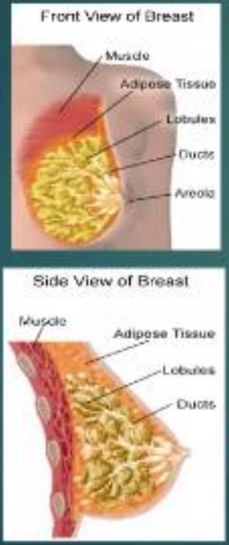The Breast as a Nutrition Provider
Breast Imaging Modalities
Besides physical examination, the following imaging modalities are used to evaluate the breast.
- Mammography film screen and digital
- Ultrasonography
- Magnetic resonance imaging (MRI)
- Computerised Tomography (CT)
- Radionuclide Imaging (RNI)
NEWER BREAST IMAGING MODALITIES
- Molecular breast imaging
- Ultrasound elastography
- Breast tomosynthesis
- Dedicated Breast CT mammography
Ultrasonography
- Ultrasonography is non invasive and does not use ionising energy. It would have been ideal for screening but is highly operator and technique dependent.
- It may not pick small calcifications commonly seen in early cancers.
- However it has vital role in evaluation of breast masses as shown in the indications below
Breast Ultrasonography INDICATIONS:
To characterise mammographic or palpable masses as cystic or solid
To evaluate palpable masses in the young(<30yyrs),pregnant and lactating patients
To evaluate non-palpable abnormalities for which mammographic diagnosis is uncertaln
To help exclude a mass thought to be cause an area of mammographic asymmetric density
To guide interventional procedures such cyst aspiration, core biopy, abscess drainage etc.
ULTRASOUND
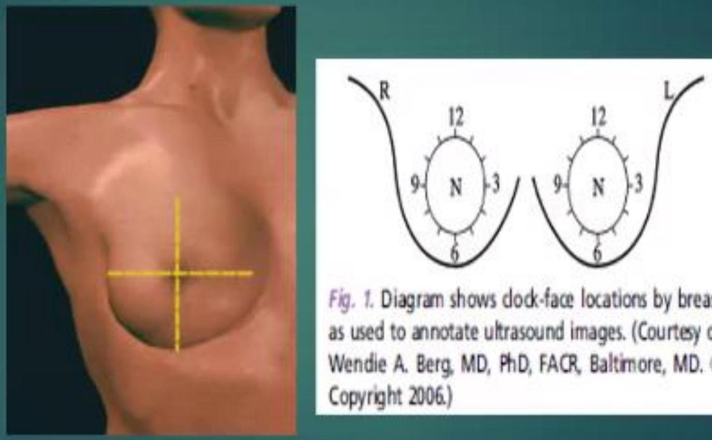 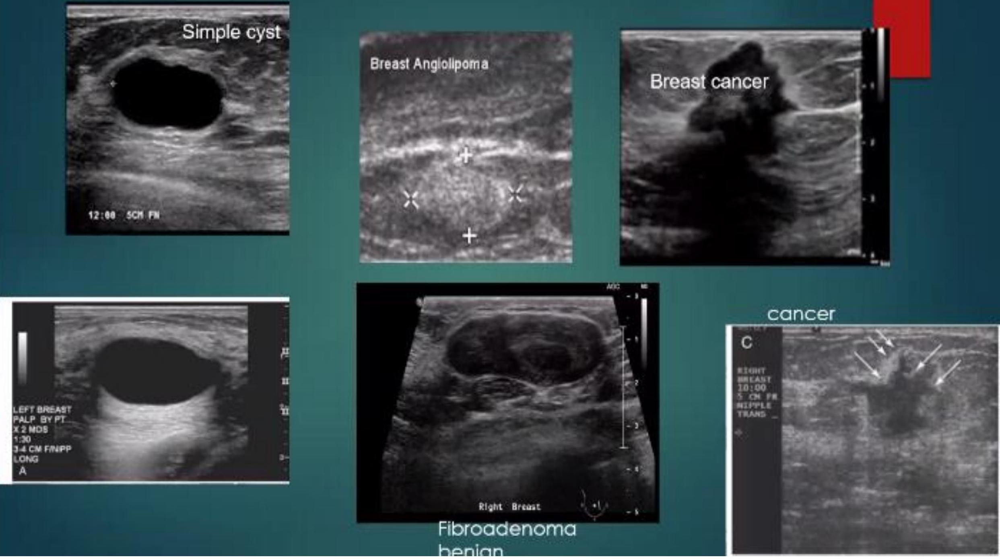 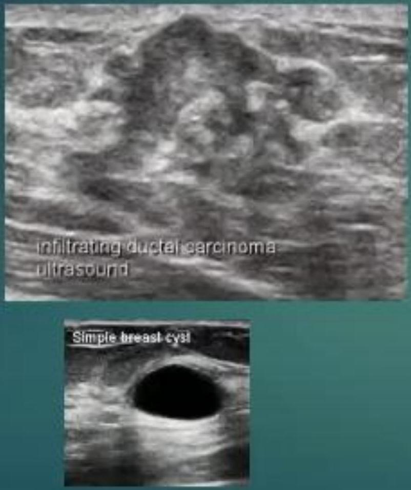 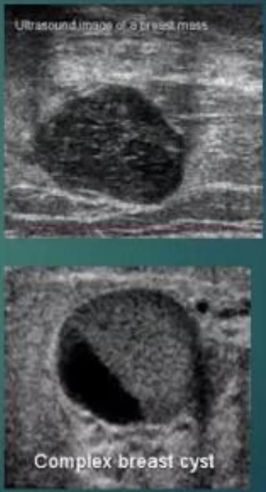
Mammography
Indications
i) As a screening tool
currently mammography is the most important imaging modality used as a primary screening fool for breast cancer. The sole purpose of screening is to detect breast cancers early and decrease morbidity and mortality
Effective screening program relies on sensitivity, accuracy, availability affordability and documented high benefit and low risk.
So far Mammography meets most of the above.
Role of Screening
Survival Rate
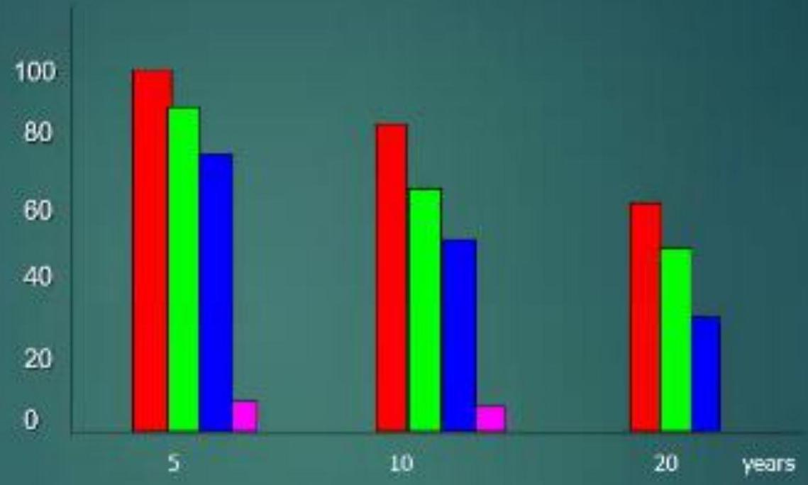Minimal cancer Distant metastases
Negative nodes Positive Nodes
- In a screening program, 310 cancers were diagnosed in a large sample of asymptomatic patients.
- 148 were palpable retrospectively
- 102 of these were in the upper outer quadrant palpable only with the patient upright not supine.
This study underscores importance of thorough physical examination
Mammography Continued
ii) As a diagnostic tool
Besides further evaluating the palpable mass, mammography can reveal an unsuspected impalpable cancer in a patient with a clinically benign lesion.
It may also show unsuspected cancer in the contra lateral breast.
Mammography
In mammography two standard views are done the craino-caudal and the medial lateral oblique
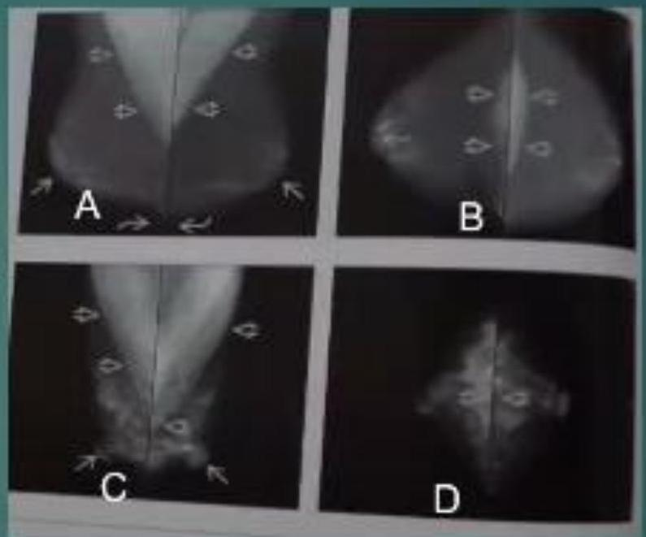A and C MLO views
B and D CC view
Digital Mammography
The x ray film is replaced by solid state detectors that convert x rays into electrical signals.
- The detectors are similar to those found in digital cameras
- clectrical signals are used to produce images of the breast that can be seen on a computer screen or printed on special film similar to conventional mammograms.
Computer-Aided Detection (CAD)
- systems use a digitized mammographic: image that can be obtained from either a conventional film mammogram or a digitally acquired mammogram.
Digital Mammo V
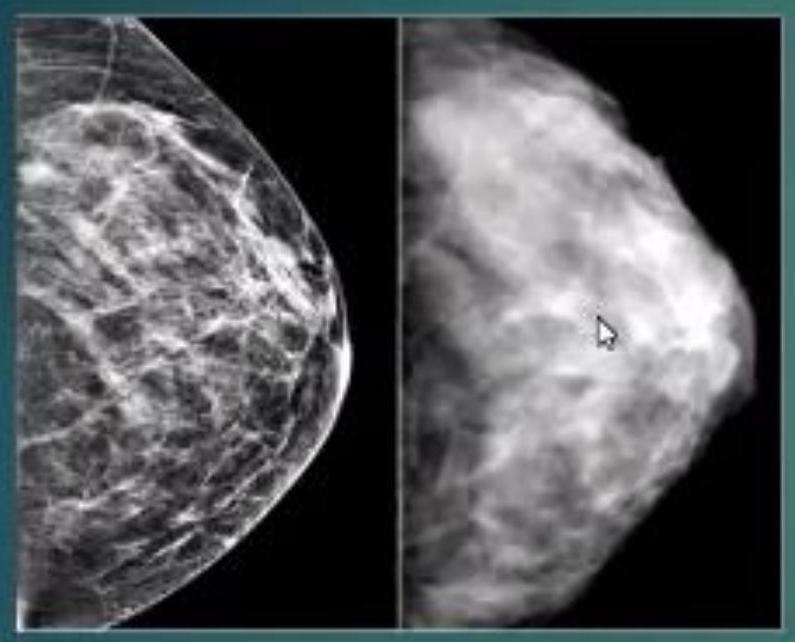- On the left, a normal digital mammogram; a normal mammogram from traditional X-ray fllm is on the right
- Digital mammo offers
- Improved contrast resolution, may improve diagnostic capability
- Currently hoth have equal breast radn. dose, however devs in detector design may eventually result in decreased radn dosc for digital mammo.
- several studies have demonstrated no significant difference in cancer detection rates between the two techniques
Mammography Indications
- Women >35 yrs with focal signs
- Screening programes for women > 35yrs(3 yearly): Women >47-50 yrs (U.K) by request/refferal Women over 73 yrs by self request
- Screening moderate -high risk of familial CA
- Breast CA pt- to exclude multifocal disease/ multicentric / bilateral disease
- Follow-up breast CA
- Metastatic disease of unknown origin
Mammography Contraindications
Not indicated in:
- Asymptomatic women without familial history <35 yrs
- Investigation of non-focal signs e.g diffuse breast pain.
- Assessment of silicon implant integrity
Physical Signs
Benign
- Soft
- Smooth outline
- Freely mobile
- Not fixed to skin
Malignant
- Hard
- Irregular outline
- Poorly mobile
- Fixed to skin
Mediolateral Oblique Projection

Cranial Caudal
Breast compositioa and its mammographic appearance.1
A younger woman has denser or filbro-glandular breasts. Her mammogram will look very white or "cloudy"
Middle-aged women have a mixture of fibrous and glandular tissues ( 50-50 breast). Their mammograms look black and white.
In a mature breast, most of the fibrous tissue is replaced with fatty tissue. The mammograms tend to look black or gray (Fatty Replaced hreast)
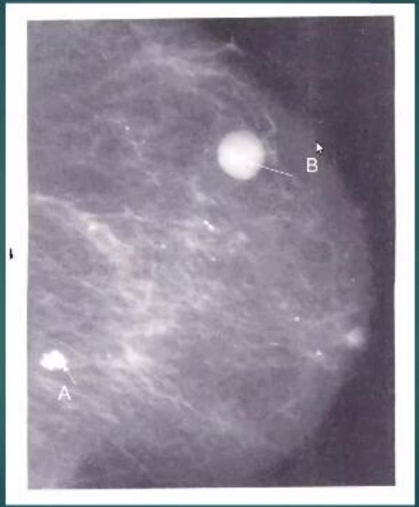Mammogram with cancer (A) and benign lesion (B)
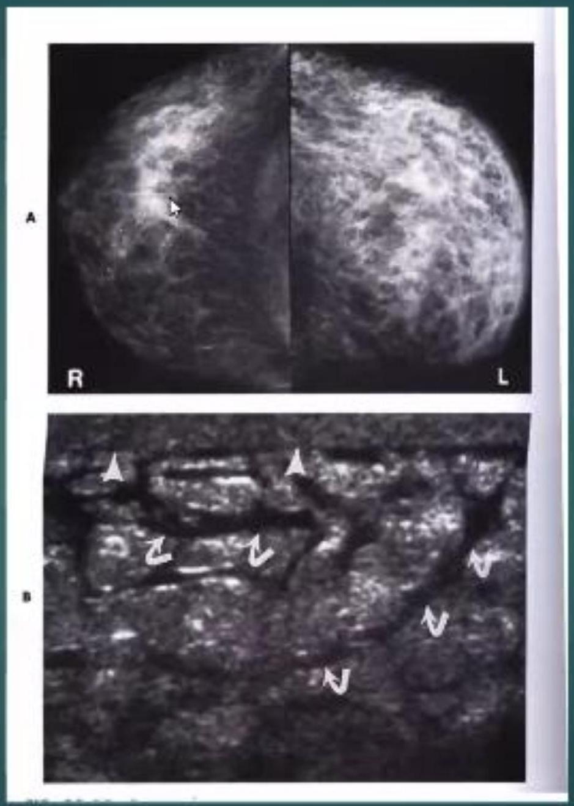Ductography
- Ductography is examination of the ductal system of the breast.
INDICATIONS
Unilateral nipple discharge, especially when blood stained
Ductograms
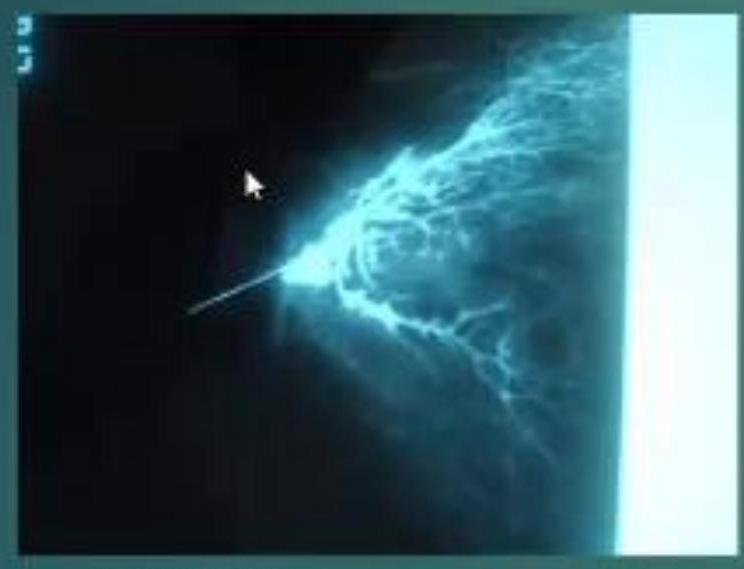NORMAL
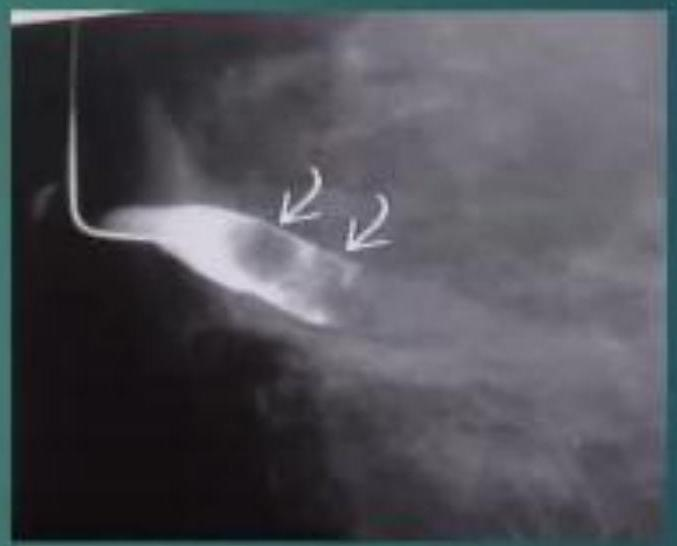DILATED DUCT WITH FILLINNG DEFECTS DUE TO PAPPILOMAS
MRI
- The indications for MRI are similar to those of ultrasound. Like ultrasound MRI does not use radiation energy but may not be cost effective for mass screening.
- MRI is used as problem solving in dense breast or the very young at high risk as a screening tool
Newer Breast Imaging Modalities
- Molecular breast imaging.
- Breast tomosythesis.
- Ultrasound elastography.
- Dedicated CT
Molecular Breasting Imaging (MBI)
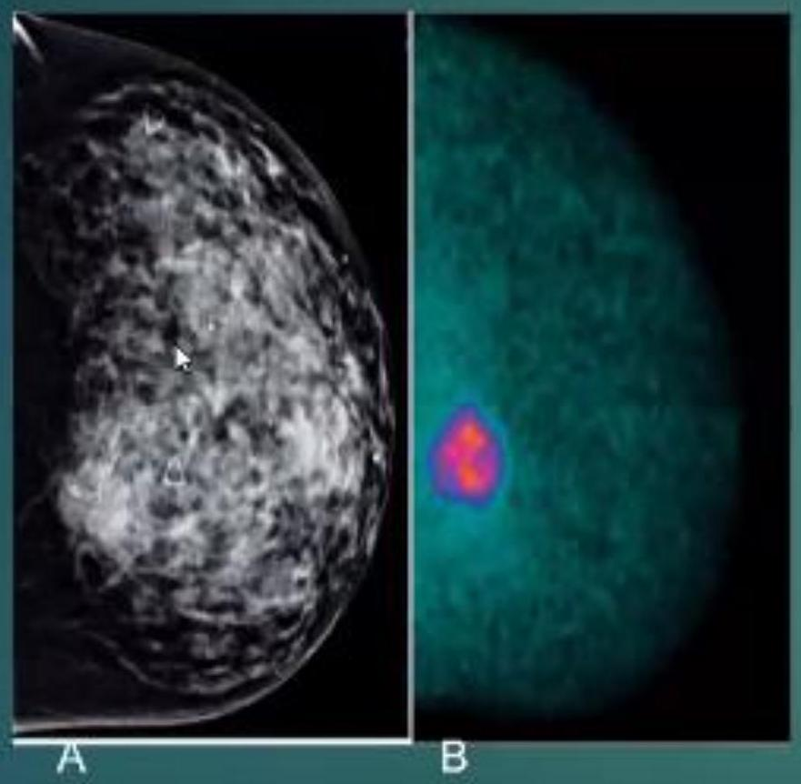Images show a cancer that would have been missed on mammo identified on MBI
- Molecular breasting imaging (MBI) is a method for detecting breast cancer.
- The technique is also known as a Miraluma (pronounced mee-ra-LOOma) test, sestamibi (pronounced ses-ta-Mlbee), scintimammography. or breast specific gamma imaging.
Breast Tomosythesis
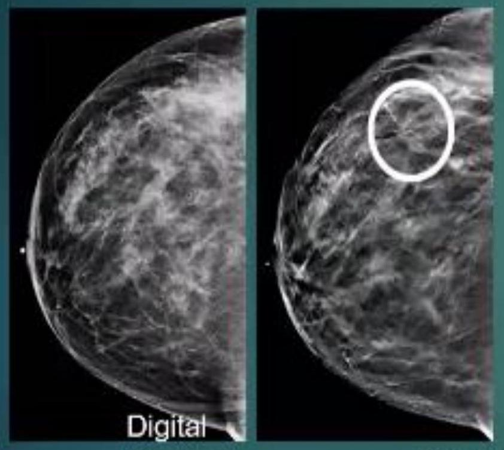- Breast tomosynthesis takes multiple images of the entire breast. It allows our specialized breast radiologists to see through layers of tissue and examine areas of concern from all angles. Benefits can include:
- Earlier detection of small breast cancers that may be hidden during digital mammography
- Grealer accuracy in pinpoinling size, shape and location of abonormalilies
- Fewer unnecessary biopsies or addilional lests
- Grealer likelihood of delec ling ruulliple breost tumors, which occur in 15% of broast cancor pationts
- Clearor images of dense breast tissue
Ultrasound Elastography
Benign lesion
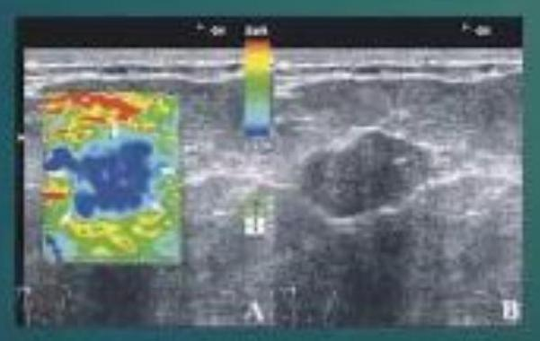Malignant lesion
Breast elastography is a new sonographic imaging technique which provides information on breast lesions in addition to conventional ultrasonography (US) and mammography.
Elastography provides a noninvasive evaluation of the stiffness of a lesion. Today, two technical solutions are available for clinical use: strain elastography and shear wave elastography.
Elastography substantially improves the possibility of differentiating benign from malignant breast lesions thereby limiting recourse to biopsy and considerably reducing the number of benign breast biopsy diagnoses.
DEDICATED BREAST CT AS A DIAGNOSTIC TOOL
- Dedicated breast CT breast imaging can be used: Adjunctive screening Diagnostic evaluation Guiding biopsies extent of disease evaluation Monitoring response to neoadjuvant chemo.
- Breast CT could become an important imaging tool.
- The radiation dose from breast CT is similar to, and is within the range of, conventional diagnostic mammography
E
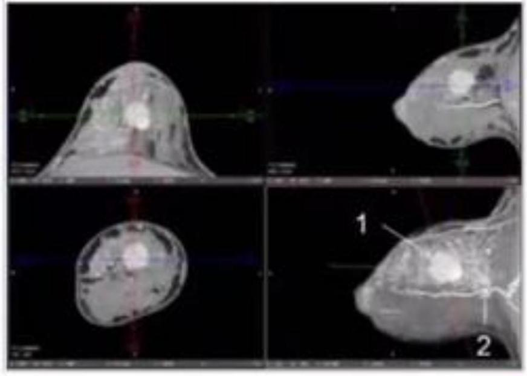Dedicated Breast CT Mammography
- This a newer breast dedicated mammography than at is proving to be better than mammography